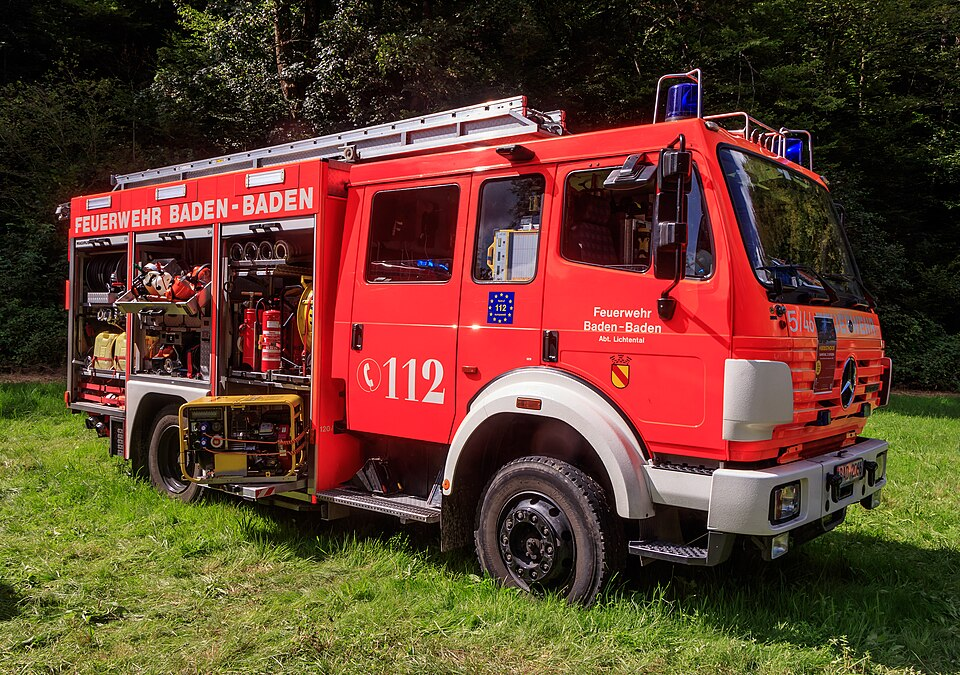

Digitaler Einheiten-Erfassungsbogen für die Feuerwehr
Ob eine Bereitschaft des Landkreises auf dem Marsch ist, ein Zug in der überörtlichen Hilfe oder Ortswehr im Hochwassereinsatz: Am Bereitstellungsraum zählt, dass die Stärkemeldung schnell, leserlich und vollständig ankommt. Dieser Bogen erfasst dafür die Kräfte einer Einheit — Einsatzkräfte mit Stärke und Funktion, Fahrzeuge mit Funkrufnamen, Auftrag und Bedarf. Du füllst ihn am Bildschirm aus statt auf der Motorhaube, druckst das gewohnte Papierformular und gibst den kompletten Bogen am Meldekopf per QR-Code weiter — ganz ohne Internet.
Zur Klarstellung, weil „Erfassungsbogen Feuerwehr" vieles heißen kann: Hier geht es um die Kräfteerfassung von Einsatzkräften und Einheiten — nicht um Objekt- oder Gefahrenerfassungsbögen für Gebäude, nicht um Brandverhütungsschau, nicht um Verwaltungs- oder Mitgliederformulare. Der Einheiten-Erfassungsbogen — häufig auch zusammengeschrieben als Einheitenerfassungsbogen bezeichnet — dient der strukturierten Erfassung von Einheiten, Stärke und Einsatzmitteln; wie das im Einzelnen abläuft, beschreibt die Stärkemeldung der Feuerwehr.

Stärkemeldung, wie die Feuerwehr sie meldet
Gezählt wird in der gewohnten Gliederung Führer / Unterführer / Mannschaft / Gesamtstärke. Namen und Funktionen (Zugführer, Gruppenführer, Atemschutzgeräteträger …) kannst du erfassen, Pflicht sind sie für die Meldung nicht. Als Feuerwehr wählst du deine Organisation zu Beginn aus; die Gliederungsebenen darüber heißen dann Gemeinde/Stadt, Landkreis oder kreisfreie Stadt, Bezirk und Land — statt THW-Ebenen wie Ortsverband und Landesverband. Einheitsbezeichnung, Funktionen und Fahrzeugtypen trägst du frei ein, so wie sie bei euch heißen; ein geschlossenes Feuerwehr-Vokabular gibt die App bewusst nicht vor, weil Bezeichnungen und Gliederung Landesrecht sind und sich von Land zu Land unterscheiden.
Fahrzeuge mit taktischen Zeichen nach DV 102
LF, TLF, DLK, ELW, GW-L: Du erfasst Fahrzeuge mit Kennzeichen und Funkrufname — Kennwort „Florian", Standort und Kennzahlen so, wie ihr sie funkt. Im PDF erscheinen sie mit ihrem taktischen Zeichen nach DV 102 — der Bogen sieht aus wie vom Zeichenbrett, nicht wie ein Ausdruck aus der Tabellenkalkulation. Welche Felder der Bogen insgesamt enthält, zeigt die Übersicht über Vorlage und Aufbau.
Fertige Bögen für Feuerwehr- und Katastrophenschutz-Einheiten
Für die taktischen Einheiten der niedersächsischen Feuerwehrverordnung — Trupp, Staffel, Gruppe, Zug und die Ortsfeuerwehr-Arten — liegen fertige Beispielbögen bei, die du als Vorlage über deinen Bogen legen kannst. Ebenso für die Katastrophenschutz-Einheiten mehrerer Bundesländer, darunter viele Brandschutz- und Löschzüge, abgeleitet aus den jeweiligen Landesregelungen samt Teileinheiten und Funkrufnamen. Einmal geladen, passt du nur noch an, was vor Ort abweicht; Details auf der Seite Katastrophenschutz der Länder. Deinen eigenen Bogen kannst du zudem als Vorlage speichern — bei der nächsten Alarmübung musterst du nur, statt neu zu tippen.
Vom Alarm bis zur Kräfteübersicht
Bei der überörtlichen Hilfe — etwa wenn ein Landkreis seine Bereitschaft zusammenzieht, je nach Land Kreisbereitschaft oder Kreisfeuerwehrbereitschaft genannt — läuft es meist so ab:
- Alarmierung. Die Einheit wird alarmiert und sammelt am Gerätehaus; der Einheitsführer öffnet den Bogen auf dem Diensthandy und lädt seine Vorlage.
- Stärke erfassen. Wer ausrückt, bleibt stehen, wer fehlt, wird gestrichen; Führer, Unterführer und Mannschaft summieren sich laufend zur Gesamtstärke. Dazu die Fahrzeuge, die tatsächlich besetzt sind, mit ihren Funkrufnamen.
- Marsch und Bereitstellungsraum. Beim Eintreffen im Bereitstellungsraum wird der Bogen gemeldet: PDF ausgedruckt übergeben oder den QR-Code direkt vom Bildschirm scannen lassen.
- Kräfteübersicht am Meldekopf. Der Meldekopf sammelt die eingetroffenen Einheiten unter einem Einsatz und hat Stärke, Fahrzeuge und Bedarf summiert vorliegen — die Grundlage für Einteilung und Weitermeldung an die nächste Führungsstelle.
Übergabe am Bereitstellungsraum: scannen statt stapeln
Der QR-Code auf der letzten PDF-Seite enthält den vollständigen Bogen. Die Führungsstelle scannt ihn und hat Stärke, Fahrzeuge und Bedarf sofort im eigenen Gerät — ohne Funknetz, ohne Server. Wie daraus eine laufend summierte Übersicht über alle eingetroffenen Einheiten wird, zeigt die Kräfteerfassung im Bereitstellungsraum.


Häufige Fragen aus der Feuerwehr
Was kostet die App — und wer steckt dahinter?
Nichts. Sie ist freie Software (EUPL-1.2) eines ehrenamtlichen Helfers, ohne Werbung, Konten oder Bezahlschranke; der Quellcode liegt offen auf GitHub.
Wo landen die Daten der Einsatzkräfte?
Auf deinem Gerät — sonst nirgends. Es gibt keinen Server und keine Cloud; weitergegeben wird nur, was du selbst als PDF, Datei oder QR-Code übergibst (Datenschutzerklärung).
Ersetzt das unser Papierformular?
Es erzeugt das Papierformular: Das PDF folgt dem gewohnten Layout des Einheiten-Erfassungsbogens, du kannst es unverändert in den Papierlauf geben. Der QR-Code macht dasselbe Blatt zusätzlich maschinenlesbar — mehr dazu im Vergleich Papier oder digital?